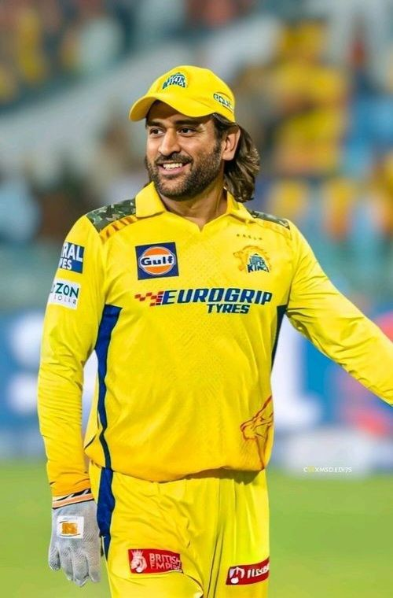

MS Dhoni Set for CSK Return vs SunRisers Hyderabad? Former Teammate Ravichandran Ashwin Has This to Say
Ravichandran Ashwin believes that Mahendra Singh Dhoni could play his first match of IPL 2026 on Monday when Chennai Super Kings take on SunRisers Hyderabad in a must-win fixture at Chepauk Stadium. On his YouTube channel, Ashwin said: "Even now, if we talk about a quality pace hitter, I think it's him. I have a feeling that against SunRisers Hyderabad, there is a good chance of him playing. Let's wait and see how it goes."

Dhoni has not played a single game this season after suffering a calf injury during a pre-season training session. The 44-year-old was expected to travel to Lucknow for CSK's May 15 fixture against the Lucknow Super Giants but decided against it. The Yellow Army lost that game by seven wickets despite posting 187 runs in their innings.
CSK, led by Rituraj Gaikwad, have won six of their 12 games. They lost their first three matches before regaining some momentum, but the defeat against LSG has knocked the wind out of their sails. Gaikwad's men now need to win their last two matches — against SRH and GT — to have any chance of qualifying for the playoffs.